import pandas
pandas.set_option('display.max_columns', None)2 Course foundations: data management
Now that we are familiar with the basics of Python syntax and how to interact with it, it’s time to learn how to manage and visualize data. In this section, we’ll explore widely-used libraries such as Pandas, which enable us to handle and analyze data effectively. We’ll get to know one of the fundamental data structures in Pandas, the DataFrame. Finally, we’ll learn some visualization techniques using Seaborn. Again, if you are already familiar with this concepts, feel free to move to the next section.
2.1 Data management with Pandas
Pandas is a Python library designed for efficient and practical data analysis tasks (clean, manipulate, analyze). Differently from NumPy, which is designed to work with numerical arrays, Pandas is designed to handle relational or labeled data (i.e., data that has been given a context or meaning through labels).
Pandas and NumPy share some similarities as Pandas builds on NumPy. However, rather than arrays, the main object for 2D data management in Pandas is the DataFrame (equivalent to data.frame in R). DataFrames are essentially matrices with labeled columns and rows that can accommodate mixed datatypes and missing values. DataFrames are composed of rows and columns. Row labels are known as indices (start from 0) and column labels as columns names.
Pandas is a very good tool for:
- Dealing with missing data
- Adding or deleting columns
- Align data on labels or not on labels (i.e., merging and joining)
- Perform grouped operations on data sets.
- Transforming other Python data structures to DataFrames.
- Multi-indexing hierarchically.
- Load data from multiple file types.
- Handling time-series data, as it has specific time-series functionalities.
2.1.1 Data structures
Pandas builds on two main data structures: Series and DataFrames. A Series represents a 1D array, while a DataFrame is a 2D labeled array. The easiest way to understand these structures is to think of DataFrames as containers for lower-dimensional data. Specifically, the columns of a DataFrame are composed of Series, and each element within a Series (i.e., the rows of the DataFrame) is an individual scalar value, such as a number or a string. In simple terms, Series are columns made of scalar elements, and DataFrames are collections of Series with assigned labels. The image below represents a DataFrame.
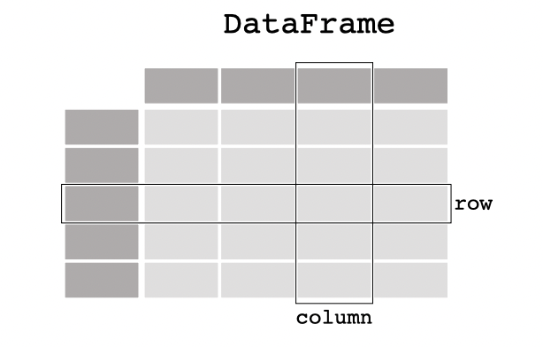
All Pandas data structures are value-mutable (i.e., we can change the values of elements and replace DataFrames) but some are not always size-mutable. The length of a Series cannot be changed, but, for example, columns can be inserted into a DataFrame.
2.1.2 Creating a DataFrame.
There are two primary methods to create DataFrames and Series in Pandas. Firstly, they can be constructed by transforming built-in Python data structures like lists or dictionaries. Secondly, they can be generated by importing data, for example, by reading .csv files. Let’s begin by examining how to create them from Python structures.
For any code we want to run that uses pandas, just as we did with NumPy, we have to first import it. In the second line of code of the cell below, I am modifying the display options so that we can see all columns in a dataframe; otherwise, there is a default limit, and some columns get collapsed in previews.
The first example illustrates how to create a DataFrame from a dictionary.
phds = {'Name': ['Joël Marbet', 'Alba Miñano-Mañero','Dmitri Kirpichev',
'Yang Xun','Utso Pal Mustafi',
'Christian Maruthiah','Kazuharu Yanagimoto'],
'Undergrad University': ['Univeristy of Bern', 'University of València',
'Universidad Complutense de Madrid',
'Renmin University of China',
'Presidency University','University of Melbourne','University of Tokyo'],
'Fields':['Monetary Economics','Urban Economics','Applied Economics',
'Development Economics','Macro-Finance',
'Development Economics','Macroeconomics'],
'PhD Desk': [20,10,11,15,18,23,5]}
phd_df = pandas.DataFrame(phds)
phd_df| Name | Undergrad University | Fields | PhD Desk | |
|---|---|---|---|---|
| 0 | Joël Marbet | Univeristy of Bern | Monetary Economics | 20 |
| 1 | Alba Miñano-Mañero | University of València | Urban Economics | 10 |
| 2 | Dmitri Kirpichev | Universidad Complutense de Madrid | Applied Economics | 11 |
| 3 | Yang Xun | Renmin University of China | Development Economics | 15 |
| 4 | Utso Pal Mustafi | Presidency University | Macro-Finance | 18 |
| 5 | Christian Maruthiah | University of Melbourne | Development Economics | 23 |
| 6 | Kazuharu Yanagimoto | University of Tokyo | Macroeconomics | 5 |
To find out how many rows and columns a dataframe has, we can call the .shape attribute. For instance, the dataframe we just created has 2 rows and 4 columns.
phd_df.shape(7, 4)We can work with single columns or subset our dataframe to a set of columns by calling the columns names in square braces []. The returning column will be of the pandas.Series type.
phd_df['Name']0 Joël Marbet
1 Alba Miñano-Mañero
2 Dmitri Kirpichev
3 Yang Xun
4 Utso Pal Mustafi
5 Christian Maruthiah
6 Kazuharu Yanagimoto
Name: Name, dtype: objecttype(phd_df['Name'])pandas.core.series.Series
My tip
Using double braces ([[]]) to subset a DataFrame results in a DataFrame rather than a Series. This is so because the inner pair of brackets creates a list of columns, while the outer pair allows for data selection from the DataFrame.
phd_df[['Name']]| Name | |
|---|---|
| 0 | Joël Marbet |
| 1 | Alba Miñano-Mañero |
| 2 | Dmitri Kirpichev |
| 3 | Yang Xun |
| 4 | Utso Pal Mustafi |
| 5 | Christian Maruthiah |
| 6 | Kazuharu Yanagimoto |
type(phd_df[['Name']])pandas.core.frame.DataFrameColumns names can be accessed by calling the attribute .columns of a dataframe.
phd_df.columnsIndex(['Name', 'Undergrad University', 'Fields', 'PhD Desk'], dtype='object')With this in mind, we can copy a selection of our DataFrame to a new one. We use the .copy() method to generate a copy of the data and avoid broadcasting any change to the original frame we are subsetting.
phd_df2 = phd_df[['Name','Fields']].copy()
phd_df2| Name | Fields | |
|---|---|---|
| 0 | Joël Marbet | Monetary Economics |
| 1 | Alba Miñano-Mañero | Urban Economics |
| 2 | Dmitri Kirpichev | Applied Economics |
| 3 | Yang Xun | Development Economics |
| 4 | Utso Pal Mustafi | Macro-Finance |
| 5 | Christian Maruthiah | Development Economics |
| 6 | Kazuharu Yanagimoto | Macroeconomics |
We could also create a dataframe from other Python data-structures. In the example below, the same DataFrame is created from a list. If we do not specify the column names, it will just give numeric labels to columns from 0 to \(n\).
phds_list = [
['Joël Marbet', 'University of Bern', 'Monetary Economics', 20],
['Alba Miñano-Mañero', 'University of València', 'Urban Economics', 10],
['Dmitri Kirpichev', 'Universidad Complutense de Madrid',
'Applied Economics', 11],
['Yang Xun', 'Renmin University of China', 'Development Economics', 15],
['Utso Pal Mustafi', 'Presidency University', 'Macro-Finance', 18],
['Christian Maruthiah', 'University of Melbourne',
'Development Economics', 23],
['Kazuharu Yanagimoto', 'University of Tokyo', 'Macroeconomics', 5]
]
# Create a list of column names
column_names_list = ['Name', 'Undergraduate University', 'Fields','PhD desk']
# Create a DataFrame from the array, using the list as column names and the tuple as row labels
df = pandas.DataFrame(phds_list, columns=column_names_list)
df| Name | Undergraduate University | Fields | PhD desk | |
|---|---|---|---|---|
| 0 | Joël Marbet | University of Bern | Monetary Economics | 20 |
| 1 | Alba Miñano-Mañero | University of València | Urban Economics | 10 |
| 2 | Dmitri Kirpichev | Universidad Complutense de Madrid | Applied Economics | 11 |
| 3 | Yang Xun | Renmin University of China | Development Economics | 15 |
| 4 | Utso Pal Mustafi | Presidency University | Macro-Finance | 18 |
| 5 | Christian Maruthiah | University of Melbourne | Development Economics | 23 |
| 6 | Kazuharu Yanagimoto | University of Tokyo | Macroeconomics | 5 |
A DataFrame can also be created departing from a tuple:
phds_tu = (
('Joël Marbet', 'University of Bern', 'Monetary Economics', 20),
('Alba Miñano-Mañero', 'University of València', 'Urban Economics', 10),
('Dmitri Kirpichev', 'Universidad Complutense de Madrid',
'Applied Economics', 11),
('Yang Xun', 'Renmin University of China', 'Development Economics', 15),
('Utso Pal Mustafi', 'Presidency University', 'Macro-Finance', 18),
('Christian Maruthiah', 'University of Melbourne',
'Development Economics', 23),
('Kazuharu Yanagimoto', 'University of Tokyo', 'Macroeconomics', 5)
)
# Create a list of column names
column_names_list = ['Name', 'Undergraduate University', 'Fields','PhD desk']
# Create a DataFrame from the array, using the list as column names and the tuple as row labels
df = pandas.DataFrame(phds_tu, columns=column_names_list)
df| Name | Undergraduate University | Fields | PhD desk | |
|---|---|---|---|---|
| 0 | Joël Marbet | University of Bern | Monetary Economics | 20 |
| 1 | Alba Miñano-Mañero | University of València | Urban Economics | 10 |
| 2 | Dmitri Kirpichev | Universidad Complutense de Madrid | Applied Economics | 11 |
| 3 | Yang Xun | Renmin University of China | Development Economics | 15 |
| 4 | Utso Pal Mustafi | Presidency University | Macro-Finance | 18 |
| 5 | Christian Maruthiah | University of Melbourne | Development Economics | 23 |
| 6 | Kazuharu Yanagimoto | University of Tokyo | Macroeconomics | 5 |
type(phds_tu)tupleDataFrames can also receive as data source NumPy arrays:
import numpy as np
data_arr = np.array([[1, 2, 3], [4, 5, 6], [7, 8, 9]])
# Create a DataFrame from the NumPy array
df_arr = pandas.DataFrame(data_arr, columns=['A', 'B', 'C'])
df_arr| A | B | C | |
|---|---|---|---|
| 0 | 1 | 2 | 3 |
| 1 | 4 | 5 | 6 |
| 2 | 7 | 8 | 9 |
Similarly, we can also transform built-in structures into pandas.Series
week_series= pandas.Series(['Monday','Tuesday','Wednesday']) # from a list
week_series0 Monday
1 Tuesday
2 Wednesday
dtype: objectThe previous line would be equivalent to first creating a list and then passing it as an argument to pandas.Series. We can also specify the row index, which can be very useful for join and concatenate operations. Additionally, we can specify a name
week_list = ['Monday','Tuesday','Wednesday']
week_l_to_series = pandas.Series(week_list,index=range(3,6),name='Week')
week_l_to_series3 Monday
4 Tuesday
5 Wednesday
Name: Week, dtype: objectWe could convert that series to a pandas.DataFrame() that would have a column name ‘Week’ and as row index (3,4,5)
pandas.DataFrame(week_l_to_series)| Week | |
|---|---|
| 3 | Monday |
| 4 | Tuesday |
| 5 | Wednesday |
Similarly, Series can also be created from dictionaries as shown below:
weekdays_s = {
'Monday': 'Work',
'Tuesday': 'Work',
'Wednesday': 'Work',
'Thursday': 'Work',
'Friday': 'Work',
'Saturday': 'Weekend',
'Sunday': 'Weekend'
}
dic_to_series = pandas.Series(weekdays_s,name='Day_type')dic_to_seriesMonday Work
Tuesday Work
Wednesday Work
Thursday Work
Friday Work
Saturday Weekend
Sunday Weekend
Name: Day_type, dtype: objectMost Pandas operations and methods return DataFrames or Series. For instance, the describe() method, which returns basic statistics of numerical data, returns either a DataFrame or a Series.
df_arr['A'].describe()count 3.0
mean 4.0
std 3.0
min 1.0
25% 2.5
50% 4.0
75% 5.5
max 7.0
Name: A, dtype: float64x = df_arr['A'].describe() # I use describe on a series, returns a series
type(x)pandas.core.series.Seriesx = df_arr[['A']].describe() # I use describe on a dataframe, returns a dataframe
type(x)pandas.core.frame.DataFramex| A | |
|---|---|
| count | 3.0 |
| mean | 4.0 |
| std | 3.0 |
| min | 1.0 |
| 25% | 2.5 |
| 50% | 4.0 |
| 75% | 5.5 |
| max | 7.0 |
2.1.3 Importing and exporting data
Besides creating our own tabular data, Pandas can be used to import and read data into Pandas own structures. Reading different file types (excel, parquets, json…) is supported by tha family of read_* functions. To illustrate it, let’s take a look to the credit car fraud data from Kaggle.
First, we define the location of our data file. If you have a local copy of the course folder, you can specify the path as ../data/card_transdata.csv. This path tells the program to start from the current working directory (i.e., the folder where this notebook is saved), move up one level, and then navigate to the data folder, where the .csv file is stored.
file_csv ='../data/card_transdata.csv'
data = pandas.read_csv(file_csv)Printing the first or last n elements of the data is possible using the methods .head(n) and .tail(n), for the first and bottom elements respectively.
data.head(5)| distance_from_home | distance_from_last_transaction | ratio_to_median_purchase_price | repeat_retailer | used_chip | used_pin_number | online_order | fraud | |
|---|---|---|---|---|---|---|---|---|
| 0 | 57.877857 | 0.311140 | 1.945940 | 1.0 | 1.0 | 0.0 | 0.0 | 0.0 |
| 1 | 10.829943 | 0.175592 | 1.294219 | 1.0 | 0.0 | 0.0 | 0.0 | 0.0 |
| 2 | 5.091079 | 0.805153 | 0.427715 | 1.0 | 0.0 | 0.0 | 1.0 | 0.0 |
| 3 | 2.247564 | 5.600044 | 0.362663 | 1.0 | 1.0 | 0.0 | 1.0 | 0.0 |
| 4 | 44.190936 | 0.566486 | 2.222767 | 1.0 | 1.0 | 0.0 | 1.0 | 0.0 |
data.tail(5)| distance_from_home | distance_from_last_transaction | ratio_to_median_purchase_price | repeat_retailer | used_chip | used_pin_number | online_order | fraud | |
|---|---|---|---|---|---|---|---|---|
| 999995 | 2.207101 | 0.112651 | 1.626798 | 1.0 | 1.0 | 0.0 | 0.0 | 0.0 |
| 999996 | 19.872726 | 2.683904 | 2.778303 | 1.0 | 1.0 | 0.0 | 0.0 | 0.0 |
| 999997 | 2.914857 | 1.472687 | 0.218075 | 1.0 | 1.0 | 0.0 | 1.0 | 0.0 |
| 999998 | 4.258729 | 0.242023 | 0.475822 | 1.0 | 0.0 | 0.0 | 1.0 | 0.0 |
| 999999 | 58.108125 | 0.318110 | 0.386920 | 1.0 | 1.0 | 0.0 | 1.0 | 0.0 |
It is also possible to get all the particular data types specifications of our columns:
data.dtypes # it's an attribute of the dataframedistance_from_home float64
distance_from_last_transaction float64
ratio_to_median_purchase_price float64
repeat_retailer float64
used_chip float64
used_pin_number float64
online_order float64
fraud float64
dtype: objectOr to get a quick technical summary of our imported data, we can use the .info() method
data.info()<class 'pandas.core.frame.DataFrame'>
RangeIndex: 1000000 entries, 0 to 999999
Data columns (total 8 columns):
# Column Non-Null Count Dtype
--- ------ -------------- -----
0 distance_from_home 1000000 non-null float64
1 distance_from_last_transaction 1000000 non-null float64
2 ratio_to_median_purchase_price 1000000 non-null float64
3 repeat_retailer 1000000 non-null float64
4 used_chip 1000000 non-null float64
5 used_pin_number 1000000 non-null float64
6 online_order 1000000 non-null float64
7 fraud 1000000 non-null float64
dtypes: float64(8)
memory usage: 61.0 MBThe summary is telling us that:
- We have a
pandas.DataFrame. - It has 1,000,000 rows and their index are from 0 to 999,9999
- None of the collumns has missing data
- All columns data type is a 64 bit float.
- It takes up 61 megabytes of our RAM memory.
While the read_* families allow to import different sources of data, the to_* allow to export it. In the below example, I am saving a csv that contains only the first 10 rows of the credit transaction data.
data.head(10).to_csv('./subset.csv')If we export other data to the same file, it will typically overwrite the existing one (unless we are specifying sheets in an Excel file, for instance). Also, this happens without warning, so it is important to be consistent in our naming to avoid unwanted overwrites.
data.head(5).to_csv('./subset.csv')2.1.4 Filtering and subsetting dataframes.
It is possible to use an approach similar to the selection of columns to be able to subset our dataframe to a given set of rows.
For example, let’s extract from the credit transaction data those that happened through online orders.
online = data[data['online_order']==1]
online.head()| distance_from_home | distance_from_last_transaction | ratio_to_median_purchase_price | repeat_retailer | used_chip | used_pin_number | online_order | fraud | |
|---|---|---|---|---|---|---|---|---|
| 2 | 5.091079 | 0.805153 | 0.427715 | 1.0 | 0.0 | 0.0 | 1.0 | 0.0 |
| 3 | 2.247564 | 5.600044 | 0.362663 | 1.0 | 1.0 | 0.0 | 1.0 | 0.0 |
| 4 | 44.190936 | 0.566486 | 2.222767 | 1.0 | 1.0 | 0.0 | 1.0 | 0.0 |
| 6 | 3.724019 | 0.956838 | 0.278465 | 1.0 | 0.0 | 0.0 | 1.0 | 0.0 |
| 9 | 8.839047 | 2.970512 | 2.361683 | 1.0 | 0.0 | 0.0 | 1.0 | 0.0 |
We can check that in our new subset the variable online_order is always 1.
online['online_order'].describe()count 650552.0
mean 1.0
std 0.0
min 1.0
25% 1.0
50% 1.0
75% 1.0
max 1.0
Name: online_order, dtype: float64online['online_order'].unique()array([1.])That is, to select rows based on a column condition, we first write the condition within []. This selection bracket will give use a series of boolean (i.e., a mask) with True values for those rows that satify the condition.
mask_data = data['online_order']==1
mask_data0 False
1 False
2 True
3 True
4 True
...
999995 False
999996 False
999997 True
999998 True
999999 True
Name: online_order, Length: 1000000, dtype: booltype(mask_data)pandas.core.series.SeriesThen, when we embrace that condition with the outer [] what we are doing is subsetting the original dataframe to those rows that are True, that is, that satisfy our condition.
If our condition involves two discrete values, we can write both conditions within the inner bracket using the | separator for or conditions and & for and. That is, we could write data[(data['var']==x) | (data['var']==y)]. This line of code is equivalent to using the .isin() conditional function with argument [x,y].
Sometimes, it is also useful to get rid of missing values on given columns using the .notna() method.
If we want to select rows and columns simultaneously, we can use the .loc[condition,variable to keep]and .iloc[condition,variable to keep] operators. For instance, to extract the distance from home only for the fraudulent transactions we could do:
data.loc[data['fraud']==1,'distance_from_home'] # first element is the condition,
# second one is the column we want. 13 2.131956
24 3.803057
29 15.694986
35 26.711462
36 10.664474
...
999908 45.296658
999916 167.139756
999919 124.640118
999939 51.412900
999949 15.724799
Name: distance_from_home, Length: 87403, dtype: float64.loc is also useful to replace the value of columns where a row satisfies certain condition. For instance, let’s create a new variable that takes value 1 only for those transactions happenning more than 5km away from home.
data['more_5km'] = 0
data.loc[data['distance_from_home'] > 5, 'more_5km'] = 1
data[data['more_5km']==1]['distance_from_home'].describe()count 688790.000000
mean 37.534356
std 76.321463
min 5.000021
25% 9.407164
50% 17.527437
75% 37.590001
max 10632.723672
Name: distance_from_home, dtype: float64To extract using indexing of rows and columns we typically rely in iloc instead. In the snippet of code below, I am extracting the rows from 10 to 20 and the second and third column:
data.iloc[10:21,2:4]| ratio_to_median_purchase_price | repeat_retailer | |
|---|---|---|
| 10 | 1.136102 | 1.0 |
| 11 | 1.370330 | 1.0 |
| 12 | 0.551245 | 1.0 |
| 13 | 6.358667 | 1.0 |
| 14 | 2.798901 | 1.0 |
| 15 | 0.535640 | 1.0 |
| 16 | 0.516990 | 1.0 |
| 17 | 1.846451 | 1.0 |
| 18 | 2.530758 | 1.0 |
| 19 | 0.307217 | 1.0 |
| 20 | 1.838016 | 1.0 |
In whatever selection you are doing, keep in mind that the reasoning is always you first generate a mask and then you get the rows for which the mask holds.
2.1.5 Creating new columns
Pandas operates with the traditional mathematical operators in an element-wise fashion, without the need of writing for loops. For instance, to convert the distance from kilometers to miles (i.e., we divide by 1.609)
data['distance_from_home_km'] = data['distance_from_home']/1.609
data| distance_from_home | distance_from_last_transaction | ratio_to_median_purchase_price | repeat_retailer | used_chip | used_pin_number | online_order | fraud | more_5km | distance_from_home_km | |
|---|---|---|---|---|---|---|---|---|---|---|
| 0 | 57.877857 | 0.311140 | 1.945940 | 1.0 | 1.0 | 0.0 | 0.0 | 0.0 | 1 | 35.971322 |
| 1 | 10.829943 | 0.175592 | 1.294219 | 1.0 | 0.0 | 0.0 | 0.0 | 0.0 | 1 | 6.730853 |
| 2 | 5.091079 | 0.805153 | 0.427715 | 1.0 | 0.0 | 0.0 | 1.0 | 0.0 | 1 | 3.164126 |
| 3 | 2.247564 | 5.600044 | 0.362663 | 1.0 | 1.0 | 0.0 | 1.0 | 0.0 | 0 | 1.396870 |
| 4 | 44.190936 | 0.566486 | 2.222767 | 1.0 | 1.0 | 0.0 | 1.0 | 0.0 | 1 | 27.464845 |
| ... | ... | ... | ... | ... | ... | ... | ... | ... | ... | ... |
| 999995 | 2.207101 | 0.112651 | 1.626798 | 1.0 | 1.0 | 0.0 | 0.0 | 0.0 | 0 | 1.371722 |
| 999996 | 19.872726 | 2.683904 | 2.778303 | 1.0 | 1.0 | 0.0 | 0.0 | 0.0 | 1 | 12.350979 |
| 999997 | 2.914857 | 1.472687 | 0.218075 | 1.0 | 1.0 | 0.0 | 1.0 | 0.0 | 0 | 1.811595 |
| 999998 | 4.258729 | 0.242023 | 0.475822 | 1.0 | 0.0 | 0.0 | 1.0 | 0.0 | 0 | 2.646818 |
| 999999 | 58.108125 | 0.318110 | 0.386920 | 1.0 | 1.0 | 0.0 | 1.0 | 0.0 | 1 | 36.114434 |
1000000 rows × 10 columns
We can also operate with more than one columns. Let’s sum the indicators for repeat retailer and used chip so that we can get a new column that directly tell us if a row satisfies both conditions.
data['sum_2'] = data['repeat_retailer'] + data['used_chip']
data| distance_from_home | distance_from_last_transaction | ratio_to_median_purchase_price | repeat_retailer | used_chip | used_pin_number | online_order | fraud | more_5km | distance_from_home_km | sum_2 | |
|---|---|---|---|---|---|---|---|---|---|---|---|
| 0 | 57.877857 | 0.311140 | 1.945940 | 1.0 | 1.0 | 0.0 | 0.0 | 0.0 | 1 | 35.971322 | 2.0 |
| 1 | 10.829943 | 0.175592 | 1.294219 | 1.0 | 0.0 | 0.0 | 0.0 | 0.0 | 1 | 6.730853 | 1.0 |
| 2 | 5.091079 | 0.805153 | 0.427715 | 1.0 | 0.0 | 0.0 | 1.0 | 0.0 | 1 | 3.164126 | 1.0 |
| 3 | 2.247564 | 5.600044 | 0.362663 | 1.0 | 1.0 | 0.0 | 1.0 | 0.0 | 0 | 1.396870 | 2.0 |
| 4 | 44.190936 | 0.566486 | 2.222767 | 1.0 | 1.0 | 0.0 | 1.0 | 0.0 | 1 | 27.464845 | 2.0 |
| ... | ... | ... | ... | ... | ... | ... | ... | ... | ... | ... | ... |
| 999995 | 2.207101 | 0.112651 | 1.626798 | 1.0 | 1.0 | 0.0 | 0.0 | 0.0 | 0 | 1.371722 | 2.0 |
| 999996 | 19.872726 | 2.683904 | 2.778303 | 1.0 | 1.0 | 0.0 | 0.0 | 0.0 | 1 | 12.350979 | 2.0 |
| 999997 | 2.914857 | 1.472687 | 0.218075 | 1.0 | 1.0 | 0.0 | 1.0 | 0.0 | 0 | 1.811595 | 2.0 |
| 999998 | 4.258729 | 0.242023 | 0.475822 | 1.0 | 0.0 | 0.0 | 1.0 | 0.0 | 0 | 2.646818 | 1.0 |
| 999999 | 58.108125 | 0.318110 | 0.386920 | 1.0 | 1.0 | 0.0 | 1.0 | 0.0 | 1 | 36.114434 | 2.0 |
1000000 rows × 11 columns
Because sum_2 is not a very intuitive name, let’s take advantage of that to show we can rename columns:
data = data.rename(columns={'sum_2':'both_conditions'})
data| distance_from_home | distance_from_last_transaction | ratio_to_median_purchase_price | repeat_retailer | used_chip | used_pin_number | online_order | fraud | more_5km | distance_from_home_km | both_conditions | |
|---|---|---|---|---|---|---|---|---|---|---|---|
| 0 | 57.877857 | 0.311140 | 1.945940 | 1.0 | 1.0 | 0.0 | 0.0 | 0.0 | 1 | 35.971322 | 2.0 |
| 1 | 10.829943 | 0.175592 | 1.294219 | 1.0 | 0.0 | 0.0 | 0.0 | 0.0 | 1 | 6.730853 | 1.0 |
| 2 | 5.091079 | 0.805153 | 0.427715 | 1.0 | 0.0 | 0.0 | 1.0 | 0.0 | 1 | 3.164126 | 1.0 |
| 3 | 2.247564 | 5.600044 | 0.362663 | 1.0 | 1.0 | 0.0 | 1.0 | 0.0 | 0 | 1.396870 | 2.0 |
| 4 | 44.190936 | 0.566486 | 2.222767 | 1.0 | 1.0 | 0.0 | 1.0 | 0.0 | 1 | 27.464845 | 2.0 |
| ... | ... | ... | ... | ... | ... | ... | ... | ... | ... | ... | ... |
| 999995 | 2.207101 | 0.112651 | 1.626798 | 1.0 | 1.0 | 0.0 | 0.0 | 0.0 | 0 | 1.371722 | 2.0 |
| 999996 | 19.872726 | 2.683904 | 2.778303 | 1.0 | 1.0 | 0.0 | 0.0 | 0.0 | 1 | 12.350979 | 2.0 |
| 999997 | 2.914857 | 1.472687 | 0.218075 | 1.0 | 1.0 | 0.0 | 1.0 | 0.0 | 0 | 1.811595 | 2.0 |
| 999998 | 4.258729 | 0.242023 | 0.475822 | 1.0 | 0.0 | 0.0 | 1.0 | 0.0 | 0 | 2.646818 | 1.0 |
| 999999 | 58.108125 | 0.318110 | 0.386920 | 1.0 | 1.0 | 0.0 | 1.0 | 0.0 | 1 | 36.114434 | 2.0 |
1000000 rows × 11 columns
2.1.6 Merging tables.
Sometimes, we find that in the process of cleaning data, we need to put together different DataFrames, either vertically or horizontally. This can be achieved concatenating along indexes or, when the dataframes have a common identifier, using .merge()
Let’s start to show we can concatenate along axis. The default axis is 0, which means that it will concatenate rows (i.e., append dataframes vertically)
data_1 = data.iloc[0:100]
data_2 = data.iloc[100:200]concat_rows = pandas.concat([data_1,data_2], axis = 0)
concat_rows | distance_from_home | distance_from_last_transaction | ratio_to_median_purchase_price | repeat_retailer | used_chip | used_pin_number | online_order | fraud | more_5km | distance_from_home_km | both_conditions | |
|---|---|---|---|---|---|---|---|---|---|---|---|
| 0 | 57.877857 | 0.311140 | 1.945940 | 1.0 | 1.0 | 0.0 | 0.0 | 0.0 | 1 | 35.971322 | 2.0 |
| 1 | 10.829943 | 0.175592 | 1.294219 | 1.0 | 0.0 | 0.0 | 0.0 | 0.0 | 1 | 6.730853 | 1.0 |
| 2 | 5.091079 | 0.805153 | 0.427715 | 1.0 | 0.0 | 0.0 | 1.0 | 0.0 | 1 | 3.164126 | 1.0 |
| 3 | 2.247564 | 5.600044 | 0.362663 | 1.0 | 1.0 | 0.0 | 1.0 | 0.0 | 0 | 1.396870 | 2.0 |
| 4 | 44.190936 | 0.566486 | 2.222767 | 1.0 | 1.0 | 0.0 | 1.0 | 0.0 | 1 | 27.464845 | 2.0 |
| ... | ... | ... | ... | ... | ... | ... | ... | ... | ... | ... | ... |
| 195 | 45.031736 | 0.055077 | 1.312067 | 1.0 | 0.0 | 0.0 | 1.0 | 0.0 | 1 | 27.987406 | 1.0 |
| 196 | 242.913187 | 4.424776 | 0.741428 | 1.0 | 0.0 | 0.0 | 0.0 | 0.0 | 1 | 150.971527 | 1.0 |
| 197 | 4.586564 | 3.365070 | 2.454288 | 1.0 | 0.0 | 0.0 | 0.0 | 0.0 | 0 | 2.850568 | 1.0 |
| 198 | 19.153042 | 0.403533 | 1.111563 | 1.0 | 0.0 | 1.0 | 1.0 | 0.0 | 1 | 11.903693 | 1.0 |
| 199 | 0.718005 | 10.054520 | 1.341927 | 0.0 | 1.0 | 0.0 | 0.0 | 0.0 | 0 | 0.446243 | 1.0 |
200 rows × 11 columns
If instead we try to concatenate horizontally, it will by default try to concatenate with the index (unless we specify ignore_index=True). In the below example, since the columns are subset in different set of rows, it just fills with NaN the rows that do not share an index in the other dataframe. We can also use custom columns to align the dataframes specifying the column name in the ‘keys’ options
data_c1 =data_1[['distance_from_home','repeat_retailer' ]]
data_c2 =data_2[['distance_from_last_transaction','used_chip' ]]
data_ch = pandas.concat([data_c1,data_c2],axis = 1)
data_ch | distance_from_home | repeat_retailer | distance_from_last_transaction | used_chip | |
|---|---|---|---|---|
| 0 | 57.877857 | 1.0 | NaN | NaN |
| 1 | 10.829943 | 1.0 | NaN | NaN |
| 2 | 5.091079 | 1.0 | NaN | NaN |
| 3 | 2.247564 | 1.0 | NaN | NaN |
| 4 | 44.190936 | 1.0 | NaN | NaN |
| ... | ... | ... | ... | ... |
| 195 | NaN | NaN | 0.055077 | 0.0 |
| 196 | NaN | NaN | 4.424776 | 0.0 |
| 197 | NaN | NaN | 3.365070 | 0.0 |
| 198 | NaN | NaN | 0.403533 | 0.0 |
| 199 | NaN | NaN | 10.054520 | 1.0 |
200 rows × 4 columns
Using concat for horizontal concatenation can be very useful when we have more than one dataset to concatenate and want to avoid repeated lines using .merge, which by default can only concatenate two dataframes.
data_c1 =data_1[['distance_from_home','repeat_retailer' ]]
data_c2 =data_1[['distance_from_last_transaction','used_chip' ]]
data_c3 =data_1[['used_pin_number','online_order']]
data_ch = pandas.concat([data_c1,data_c2,data_c3],axis = 1)
data_ch | distance_from_home | repeat_retailer | distance_from_last_transaction | used_chip | used_pin_number | online_order | |
|---|---|---|---|---|---|---|
| 0 | 57.877857 | 1.0 | 0.311140 | 1.0 | 0.0 | 0.0 |
| 1 | 10.829943 | 1.0 | 0.175592 | 0.0 | 0.0 | 0.0 |
| 2 | 5.091079 | 1.0 | 0.805153 | 0.0 | 0.0 | 1.0 |
| 3 | 2.247564 | 1.0 | 5.600044 | 1.0 | 0.0 | 1.0 |
| 4 | 44.190936 | 1.0 | 0.566486 | 1.0 | 0.0 | 1.0 |
| ... | ... | ... | ... | ... | ... | ... |
| 95 | 11.411763 | 1.0 | 2.233248 | 1.0 | 0.0 | 1.0 |
| 96 | 2.987854 | 1.0 | 9.315192 | 0.0 | 0.0 | 1.0 |
| 97 | 0.530985 | 0.0 | 1.501575 | 1.0 | 0.0 | 0.0 |
| 98 | 6.136181 | 1.0 | 2.579574 | 1.0 | 1.0 | 1.0 |
| 99 | 1.532551 | 0.0 | 3.097159 | 1.0 | 0.0 | 0.0 |
100 rows × 6 columns
If instead we wanted to use the .merge() method, we would have to repeat it twice:
data_m1 = data_c1.reset_index().merge(
data_c2.reset_index(),
on='index',
how='inner',
validate='1:1')
data_m1| index | distance_from_home | repeat_retailer | distance_from_last_transaction | used_chip | |
|---|---|---|---|---|---|
| 0 | 0 | 57.877857 | 1.0 | 0.311140 | 1.0 |
| 1 | 1 | 10.829943 | 1.0 | 0.175592 | 0.0 |
| 2 | 2 | 5.091079 | 1.0 | 0.805153 | 0.0 |
| 3 | 3 | 2.247564 | 1.0 | 5.600044 | 1.0 |
| 4 | 4 | 44.190936 | 1.0 | 0.566486 | 1.0 |
| ... | ... | ... | ... | ... | ... |
| 95 | 95 | 11.411763 | 1.0 | 2.233248 | 1.0 |
| 96 | 96 | 2.987854 | 1.0 | 9.315192 | 0.0 |
| 97 | 97 | 0.530985 | 0.0 | 1.501575 | 1.0 |
| 98 | 98 | 6.136181 | 1.0 | 2.579574 | 1.0 |
| 99 | 99 | 1.532551 | 0.0 | 3.097159 | 1.0 |
100 rows × 5 columns
data_m1 = data_m1.merge(data_c3.reset_index(),
on='index',
how='inner',
validate='1:1')
data_m1| index | distance_from_home | repeat_retailer | distance_from_last_transaction | used_chip | used_pin_number | online_order | |
|---|---|---|---|---|---|---|---|
| 0 | 0 | 57.877857 | 1.0 | 0.311140 | 1.0 | 0.0 | 0.0 |
| 1 | 1 | 10.829943 | 1.0 | 0.175592 | 0.0 | 0.0 | 0.0 |
| 2 | 2 | 5.091079 | 1.0 | 0.805153 | 0.0 | 0.0 | 1.0 |
| 3 | 3 | 2.247564 | 1.0 | 5.600044 | 1.0 | 0.0 | 1.0 |
| 4 | 4 | 44.190936 | 1.0 | 0.566486 | 1.0 | 0.0 | 1.0 |
| ... | ... | ... | ... | ... | ... | ... | ... |
| 95 | 95 | 11.411763 | 1.0 | 2.233248 | 1.0 | 0.0 | 1.0 |
| 96 | 96 | 2.987854 | 1.0 | 9.315192 | 0.0 | 0.0 | 1.0 |
| 97 | 97 | 0.530985 | 0.0 | 1.501575 | 1.0 | 0.0 | 0.0 |
| 98 | 98 | 6.136181 | 1.0 | 2.579574 | 1.0 | 1.0 | 1.0 |
| 99 | 99 | 1.532551 | 0.0 | 3.097159 | 1.0 | 0.0 | 0.0 |
100 rows × 7 columns
2.1.7 Summary statistics and groupby operations.
Pandas also offers various statistical measures that can be applied to numerical data columns. By default, operations exclude missing data and extend across rows.
print('Mean distance from home:', data['distance_from_home'].mean())
print('Minimum distance from home:',data['distance_from_home'].min())
print('Median distance from home:', data['distance_from_home'].median())
print('Maximum distance from home:', data['distance_from_home'].max())Mean distance from home: 26.62879219257128
Minimum distance from home: 0.0048743850667442
Median distance from home: 9.967760078697681
Maximum distance from home: 10632.723672241103If we want more flexibility we can also specify a series of statistics and the columns we want them to be computed on using .agg
data.agg(
{
"distance_from_home": ["min", "max", "median", "skew"],
"distance_from_last_transaction": [ "max", "median", "mean"],
}
)| distance_from_home | distance_from_last_transaction | |
|---|---|---|
| min | 0.004874 | NaN |
| max | 10632.723672 | 11851.104565 |
| median | 9.967760 | 0.998650 |
| skew | 20.239733 | NaN |
| mean | NaN | 5.036519 |
Tip
Computing the mean of a dummy variable will tell us the percentage of observations within that category.
data['fraud'].mean() ## 8% are frauds. 0.087403Besides these aggreggating operations, we can also compute them within category or by groups.
data.groupby("fraud")["distance_from_home"].mean()fraud
0.0 22.832976
1.0 66.261876
Name: distance_from_home, dtype: float64Because the default return is a pandas.Series, it is useful to convert it to a pandas.DataFrame which can be done as follows:
pandas.DataFrame(data.groupby("fraud")["distance_from_home"].mean())| distance_from_home | |
|---|---|
| fraud | |
| 0.0 | 22.832976 |
| 1.0 | 66.261876 |
Notice that the new indexing variable is automatically set to our groupby one. We can undo this change to recover the groupby variable as accessible:
pandas.DataFrame(data.groupby("fraud")["distance_from_home"].mean()).reset_index()| fraud | distance_from_home | |
|---|---|---|
| 0 | 0.0 | 22.832976 |
| 1 | 1.0 | 66.261876 |
2.2 Visualization: Matplotlib and Seaborn.
The library that will allow us to do data visualization, whether static, animated or interactive, in Python is Matplotlib.
Matplotlib plots our data on Figures, each one containing axes where data points are defined as x-y coordinates. This means that matplotlib will allow us to manipulate the displays by changing the elements of these two classes:
Figure:
The entire figure that contains the axes, which are the actual plots.
Axes:
Contains a region for plotting data, and include the x and y axis (and z if is 3D) where we actually plot the data. The figure below, from the package original documentation, illustrates all the elements within a figure.
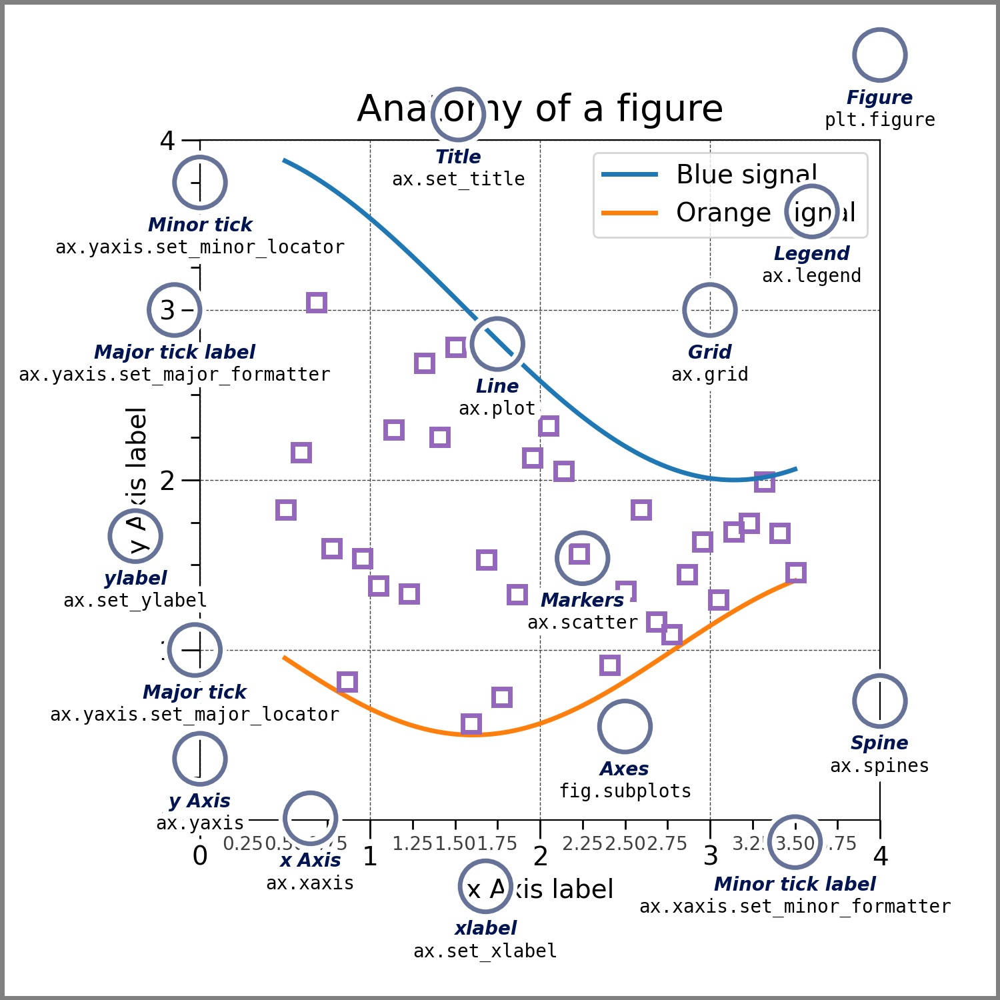
import matplotlib.pyplot as pltFor the following examples, we will use data different from the crad transaction. However, just as in most typical real life situations, we will have to do some pre-processing before we can start plotting our data. In this case, we are going to be using data from the World Health Organization on mortality induced by pollution and country GDP per capita data from the World Bank
death_rate = pandas.read_csv('../data/data.csv')
gdp = pandas.read_csv('../data/gdp-per-capita-worldbank.csv')death_rate[(death_rate['Location']=='Algeria')
& (death_rate['Dim1']=='Both sexes')
& (death_rate['Dim2']=='Total')
& (death_rate['IndicatorCode']=='SDGAIRBOD')]| IndicatorCode | Indicator | ValueType | ParentLocationCode | ParentLocation | Location type | SpatialDimValueCode | Location | Period type | Period | IsLatestYear | Dim1 type | Dim1 | Dim1ValueCode | Dim2 type | Dim2 | Dim2ValueCode | Dim3 type | Dim3 | Dim3ValueCode | DataSourceDimValueCode | DataSource | FactValueNumericPrefix | FactValueNumeric | FactValueUoM | FactValueNumericLowPrefix | FactValueNumericLow | FactValueNumericHighPrefix | FactValueNumericHigh | Value | FactValueTranslationID | FactComments | Language | DateModified | |
|---|---|---|---|---|---|---|---|---|---|---|---|---|---|---|---|---|---|---|---|---|---|---|---|---|---|---|---|---|---|---|---|---|---|---|
| 2342 | SDGAIRBOD | Ambient and household air pollution attributab... | numeric | AFR | Africa | Country | DZA | Algeria | Year | 2019 | True | Sex | Both sexes | SEX_BTSX | Cause | Total | ENVCAUSE_ENVCAUSE000 | NaN | NaN | NaN | NaN | NaN | NaN | 41.43 | NaN | NaN | 28.46 | NaN | 55.68 | 41 [28-56] | NaN | NaN | EN | 2022-08-25T22:00:00.000Z |
We keep the variables we are interested in.
keep_vars = ['Indicator','Location','ParentLocationCode',
'ParentLocation','SpatialDimValueCode',
'Location','FactValueNumeric']
death_rate = death_rate[(death_rate['Dim1']=='Both sexes')
& (death_rate['Dim2']=='Total')
& (death_rate['IndicatorCode']=='SDGAIRBOD')][keep_vars]death_rate| Indicator | Location | ParentLocationCode | ParentLocation | SpatialDimValueCode | Location | FactValueNumeric | |
|---|---|---|---|---|---|---|---|
| 389 | Ambient and household air pollution attributab... | Bahamas | AMR | Americas | BHS | Bahamas | 10.04 |
| 450 | Ambient and household air pollution attributab... | Democratic Republic of the Congo | AFR | Africa | COD | Democratic Republic of the Congo | 100.30 |
| 453 | Ambient and household air pollution attributab... | Afghanistan | EMR | Eastern Mediterranean | AFG | Afghanistan | 100.80 |
| 454 | Ambient and household air pollution attributab... | Bangladesh | SEAR | South-East Asia | BGD | Bangladesh | 100.90 |
| 456 | Ambient and household air pollution attributab... | Mozambique | AFR | Africa | MOZ | Mozambique | 102.50 |
| ... | ... | ... | ... | ... | ... | ... | ... |
| 3272 | Ambient and household air pollution attributab... | Papua New Guinea | WPR | Western Pacific | PNG | Papua New Guinea | 94.90 |
| 3277 | Ambient and household air pollution attributab... | Sao Tome and Principe | AFR | Africa | STP | Sao Tome and Principe | 95.96 |
| 3278 | Ambient and household air pollution attributab... | Togo | AFR | Africa | TGO | Togo | 96.39 |
| 3285 | Ambient and household air pollution attributab... | Republic of Moldova | EUR | Europe | MDA | Republic of Moldova | 98.45 |
| 3291 | Ambient and household air pollution attributab... | Hungary | EUR | Europe | HUN | Hungary | 99.49 |
183 rows × 7 columns
gdp.head()| Entity | Code | Year | GDP per capita, PPP (constant 2017 international $) | |
|---|---|---|---|---|
| 0 | Afghanistan | AFG | 2002 | 1280.4631 |
| 1 | Afghanistan | AFG | 2003 | 1292.3335 |
| 2 | Afghanistan | AFG | 2004 | 1260.0605 |
| 3 | Afghanistan | AFG | 2005 | 1352.3207 |
| 4 | Afghanistan | AFG | 2006 | 1366.9932 |
gdp = gdp[(gdp['Year']==2019) &
(gdp['Code'].notna()) & (gdp['Code']!='World')]gdp| Entity | Code | Year | GDP per capita, PPP (constant 2017 international $) | |
|---|---|---|---|---|
| 17 | Afghanistan | AFG | 2019 | 2079.9219 |
| 49 | Albania | ALB | 2019 | 13655.6650 |
| 81 | Algeria | DZA | 2019 | 11627.2800 |
| 113 | Angola | AGO | 2019 | 6602.4240 |
| 145 | Antigua and Barbuda | ATG | 2019 | 23035.6580 |
| ... | ... | ... | ... | ... |
| 6215 | Vanuatu | VUT | 2019 | 3070.3508 |
| 6247 | Vietnam | VNM | 2019 | 10252.0050 |
| 6279 | World | OWID_WRL | 2019 | 16847.4600 |
| 6311 | Zambia | ZMB | 2019 | 3372.3590 |
| 6343 | Zimbabwe | ZWE | 2019 | 2203.3967 |
194 rows × 4 columns
Now we are ready to merge both.
gdp_pollution = gdp.merge(death_rate,
left_on='Code',
right_on='SpatialDimValueCode',
how='inner',validate='1:1')gdp_pollution| Entity | Code | Year | GDP per capita, PPP (constant 2017 international $) | Indicator | Location | ParentLocationCode | ParentLocation | SpatialDimValueCode | Location | FactValueNumeric | |
|---|---|---|---|---|---|---|---|---|---|---|---|
| 0 | Afghanistan | AFG | 2019 | 2079.9219 | Ambient and household air pollution attributab... | Afghanistan | EMR | Eastern Mediterranean | AFG | Afghanistan | 100.80 |
| 1 | Albania | ALB | 2019 | 13655.6650 | Ambient and household air pollution attributab... | Albania | EUR | Europe | ALB | Albania | 164.80 |
| 2 | Algeria | DZA | 2019 | 11627.2800 | Ambient and household air pollution attributab... | Algeria | AFR | Africa | DZA | Algeria | 41.43 |
| 3 | Angola | AGO | 2019 | 6602.4240 | Ambient and household air pollution attributab... | Angola | AFR | Africa | AGO | Angola | 59.47 |
| 4 | Antigua and Barbuda | ATG | 2019 | 23035.6580 | Ambient and household air pollution attributab... | Antigua and Barbuda | AMR | Americas | ATG | Antigua and Barbuda | 21.54 |
| ... | ... | ... | ... | ... | ... | ... | ... | ... | ... | ... | ... |
| 171 | Uzbekistan | UZB | 2019 | 7348.1470 | Ambient and household air pollution attributab... | Uzbekistan | EUR | Europe | UZB | Uzbekistan | 93.10 |
| 172 | Vanuatu | VUT | 2019 | 3070.3508 | Ambient and household air pollution attributab... | Vanuatu | WPR | Western Pacific | VUT | Vanuatu | 138.20 |
| 173 | Vietnam | VNM | 2019 | 10252.0050 | Ambient and household air pollution attributab... | Viet Nam | WPR | Western Pacific | VNM | Viet Nam | 107.80 |
| 174 | Zambia | ZMB | 2019 | 3372.3590 | Ambient and household air pollution attributab... | Zambia | AFR | Africa | ZMB | Zambia | 63.04 |
| 175 | Zimbabwe | ZWE | 2019 | 2203.3967 | Ambient and household air pollution attributab... | Zimbabwe | AFR | Africa | ZWE | Zimbabwe | 80.64 |
176 rows × 11 columns
For a quick visualization, we can use the Pandas.plot() method, that will generate a Matplotlib figure object. Our sample data is more complicated because we don’t have an X axis directly, so we will have a line graph, where the X axis is the index (i.e., row indicator) and the Y axis is the value we are plotting.
gdp_pollution['FactValueNumeric'].plot()
plt.show()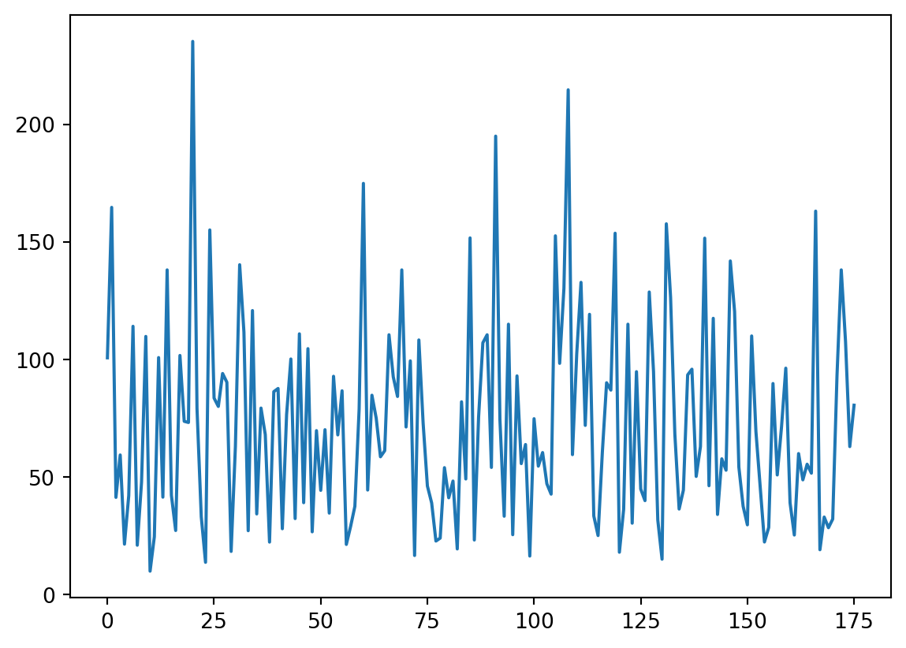
But this is not very informative. Let’s exploit the functionalities of the .plot() method to get a better grasp of our data.
gdp_pollution.plot.scatter(x='GDP per capita, PPP (constant 2017 international $)',
y='FactValueNumeric')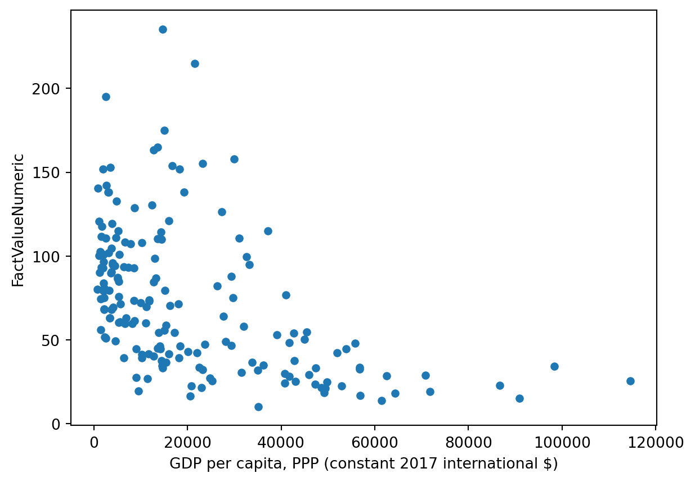
This scatterplot is starting to say something: it seems there is a negative relationship between GDP per capita and deaths due to pollution. We would have been able to produce the same graph to using Matplotlib functionalities as follows:
plt.plot(gdp_pollution['GDP per capita, PPP (constant 2017 international $)'],gdp_pollution['FactValueNumeric'],'o') #'o' = scatterplot
plt.xlabel('GDP Per Capita')
plt.ylabel('Air pollution attributable death rate (per 100 000 population)') Text(0, 0.5, 'Air pollution attributable death rate (per 100 000 population)')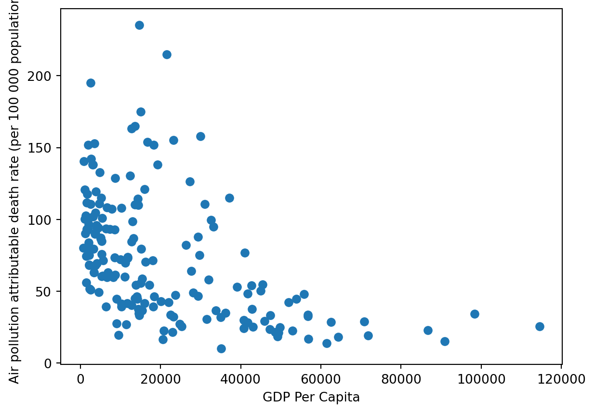
While the Pandas functionality allows us to do direct visualizations, further customizations will be required most of the time to achieve the desired output. This is when Matplotlib comes in handy.
f, axs = plt.subplots(figsize = (5,5)) # in inches. We can define a converting factor
gdp_pollution.plot(ax=axs,
x ='GDP per capita, PPP (constant 2017 international $)',
y ='FactValueNumeric',
kind='scatter')
axs.set_xlabel('GDP Per Capita')
axs.set_ylabel('Air pollution attributable death rate (per 100 000 population)')
axs.set_title('Title of this subplot')
x = gdp_pollution['GDP per capita, PPP (constant 2017 international $)'].values
y = gdp_pollution['FactValueNumeric'].values
f.suptitle('My first graph')
f.savefig('./fig1.png')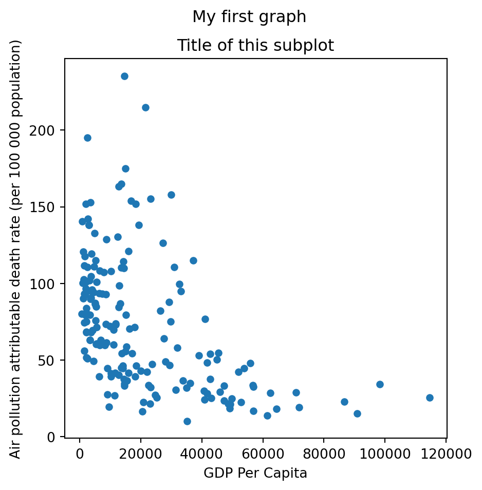
It is also possible to add the labels that indicate the country code using the annotate method.
f, ax = plt.subplots(figsize = (5,5)) # in inches. We can define a converting factor
gdp_pollution.plot(ax=ax,
x ='GDP per capita, PPP (constant 2017 international $)',
y ='FactValueNumeric',
kind='scatter')
ax.set_xlabel('GDP Per Capita')
ax.set_ylabel('Air pollution attributable death rate (per 100 000 population)')
ax.set_title('Title of this subplot')
x = gdp_pollution['GDP per capita, PPP (constant 2017 international $)'].values
y = gdp_pollution['FactValueNumeric'].values
for i in range(len(gdp_pollution)):
plt.annotate(gdp_pollution['Code'][i], (x[i], y[i] + 0.5), fontsize=7)
f.suptitle('My first graph')
f.savefig('./fig1.png')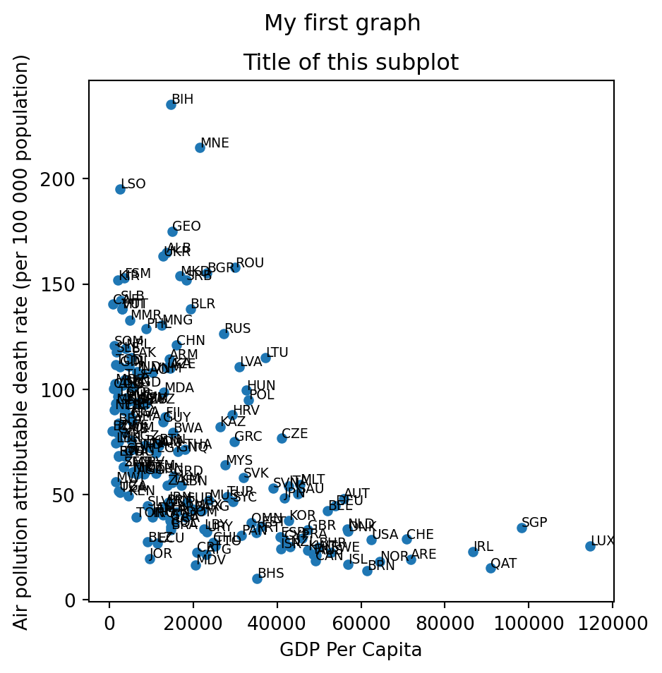
We can also plot multiple subplots within the same figure.
f, axs = plt.subplots(nrows=1, ncols=2, figsize = (8,5)) # Now axs contains two elements
gdp_pollution.plot(ax=axs[0],
x ='GDP per capita, PPP (constant 2017 international $)',
y ='FactValueNumeric',
kind='scatter')
axs[0].set_xlabel('GDP Per Capita')
axs[0].set_ylabel('Air pollution attributable death rate (per 100 000 population)')
axs[0].set_title('Title of subplot in axs 0')
gdp_pollution.plot(ax=axs[1],
x ='GDP per capita, PPP (constant 2017 international $)',
y ='FactValueNumeric',
kind='scatter')
axs[1].set_xlabel('GDP Per Capita')
axs[1].set_ylabel('Air pollution attributable death rate (per 100 000 population)')
axs[1].set_title('Title of subplot in axs 1')
f.suptitle('My first figure with two subplots')Text(0.5, 0.98, 'My first figure with two subplots')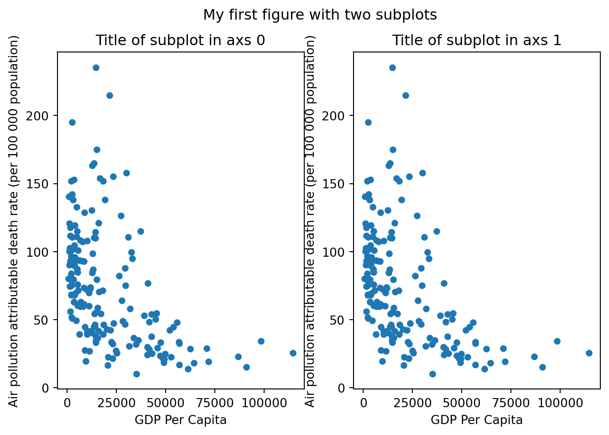
To perform more advanced statistical graphs, we can rely on Seaborn, a library that facilitates the creation of statistical graphics by leveraging matplotlib and integrating with pandas data structures.
import seaborn as sns
sns.set_theme(rc={'figure.figsize':(4,4)})Functions in seaborn are classified as:
Figure-level: internally create their own
matplotlibfigure. When we call this type of functions, they initialize its own figure, so we cannot draw them into an existing axes. To customize its axes, we need to access the Matplotlib axes that are generated within the figure and then add or modify elements.Axis-levels: the return plot is a
matplotlib.pyplot.Axesobject, which means we can use them within the Matplotlib figure set up.
sns.relplot(data=gdp_pollution,
x="GDP per capita, PPP (constant 2017 international $)",
y="FactValueNumeric")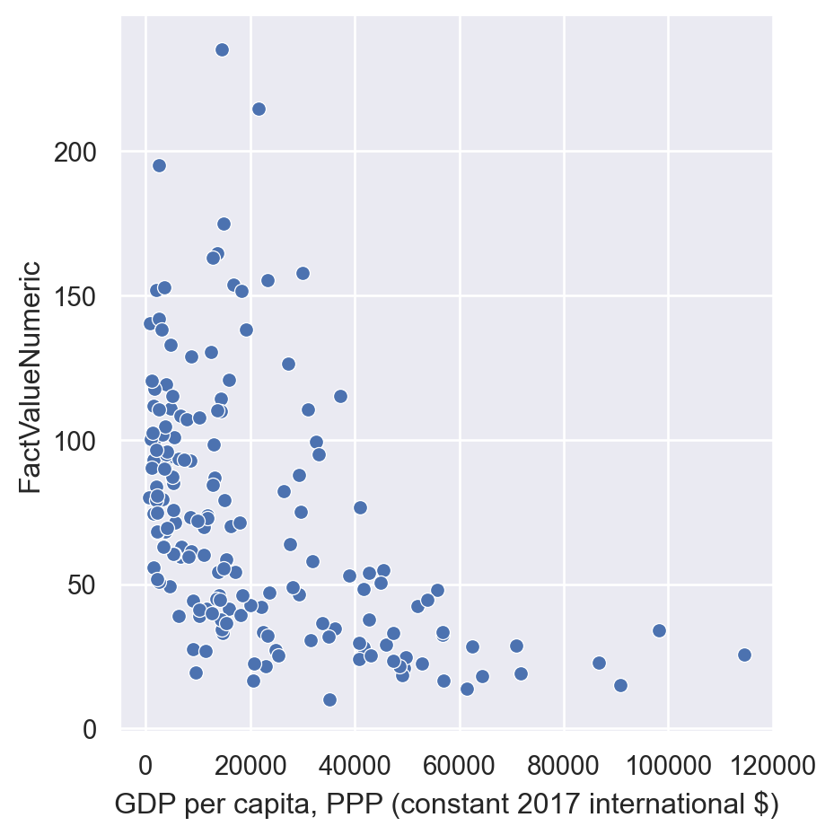
In Seaborn we can add an additional dimension in the scatterplot by using different colors for observations in different categories specifying the “hue” parameter.
sns.relplot(data=gdp_pollution,
x="GDP per capita, PPP (constant 2017 international $)",
y="FactValueNumeric",
hue = 'ParentLocation')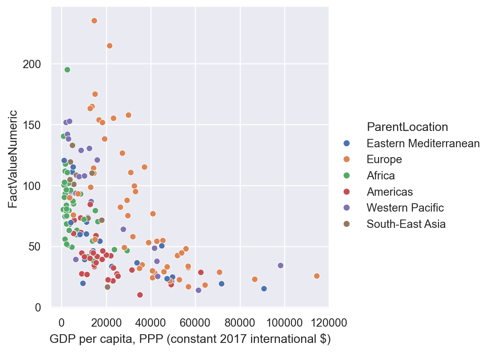
Furthermore, it is also straightforward to use different markers for each category specifying it in the “style” option. While here we are using the same variable for the differentiation, it is also possible to specify different variables in hue and style.
sns.relplot(data=gdp_pollution,
x="GDP per capita, PPP (constant 2017 international $)",
y="FactValueNumeric",
hue = 'ParentLocation',
style='ParentLocation')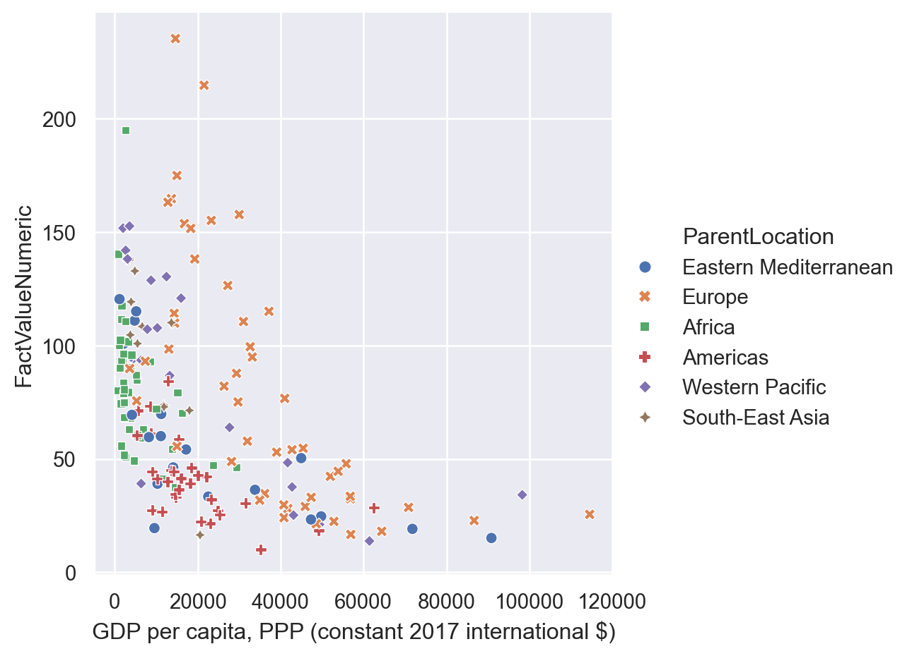
To explore more options, let’s merge our data with population at the country level.
population = pandas.read_csv('../data/population-unwpp.csv')population = population[(population['Year']==2019) & (population['Code'].notna())]gdp_pollution = gdp_pollution.merge(population,
how='inner', on='Code', validate='1:1')Now, we can make each point have a different size depending on the population of the country
sns.relplot(data=gdp_pollution, x="GDP per capita, PPP (constant 2017 international $)",
y="FactValueNumeric",
hue = 'ParentLocation',
size='Population (historical estimates)',
sizes = (15,250))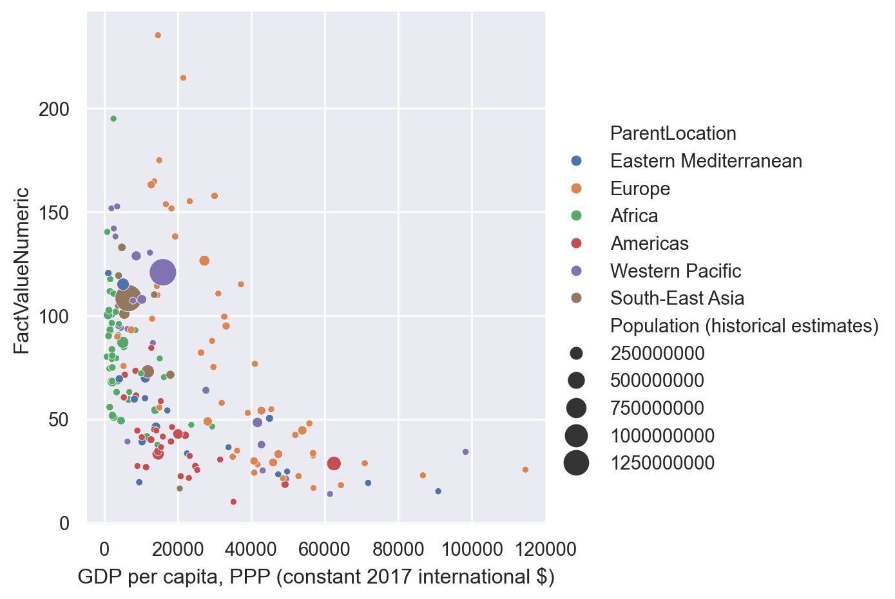
population.sort_values('Population (historical estimates)')| Entity | Code | Year | Population (historical estimates) | |
|---|---|---|---|---|
| 16674 | Tokelau | TKL | 2019 | 1775 |
| 12058 | Niue | NIU | 2019 | 1943 |
| 5562 | Falkland Islands | FLK | 2019 | 3729 |
| 11106 | Montserrat | MSR | 2019 | 4528 |
| 14002 | Saint Helena | SHN | 2019 | 5470 |
| ... | ... | ... | ... | ... |
| 7722 | Indonesia | IDN | 2019 | 269582880 |
| 17580 | United States | USA | 2019 | 334319680 |
| 7650 | India | IND | 2019 | 1383112064 |
| 3383 | China | CHN | 2019 | 1421864064 |
| 18354 | World | OWID_WRL | 2019 | 7764951040 |
237 rows × 4 columns
Seaborn also has a functionality that allows to draw scatterplots with regression lines (regplot). The function lmplot allows also to draw the regression lines conditioning on other variables (i.e., by category)
sns.regplot(data=gdp_pollution,
x="GDP per capita, PPP (constant 2017 international $)",
y="FactValueNumeric")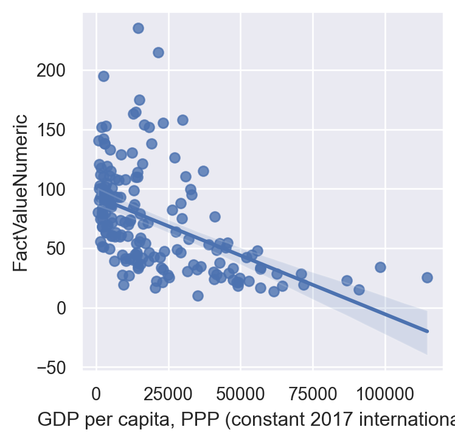
sns.lmplot(data=gdp_pollution,
x="GDP per capita, PPP (constant 2017 international $)",
y="FactValueNumeric",
hue="ParentLocation" )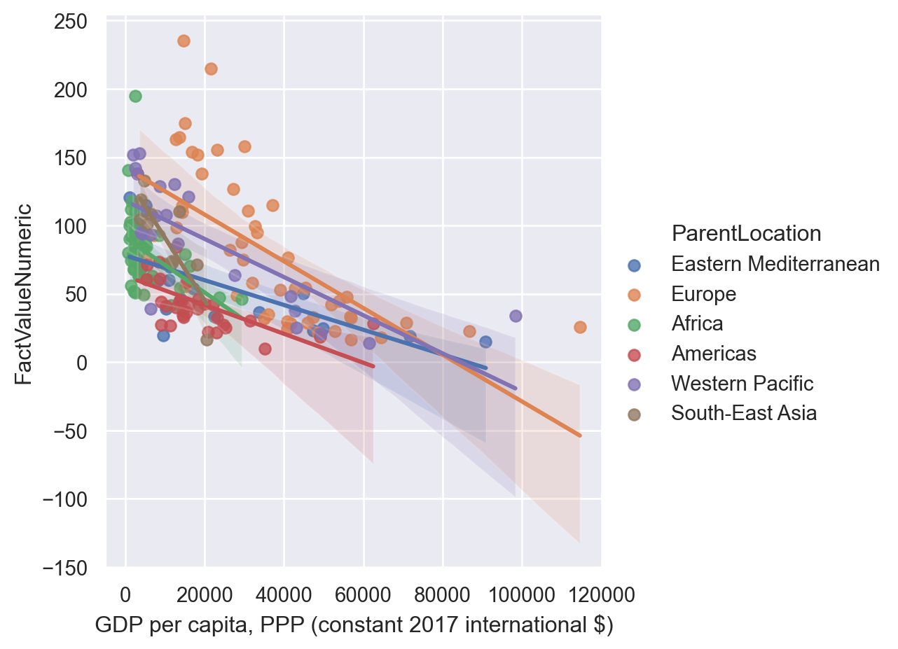
Specifying “col” or “row” will draw separate graphs for each category.
sns.lmplot(data=gdp_pollution,
x="GDP per capita, PPP (constant 2017 international $)",
y="FactValueNumeric",
hue="ParentLocation",
col ="ParentLocation" )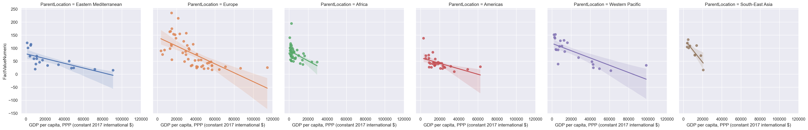
lmplot also performs polynomial regressions.
sns.lmplot(data=gdp_pollution,
x="GDP per capita, PPP (constant 2017 international $)",
y="FactValueNumeric",
order=2)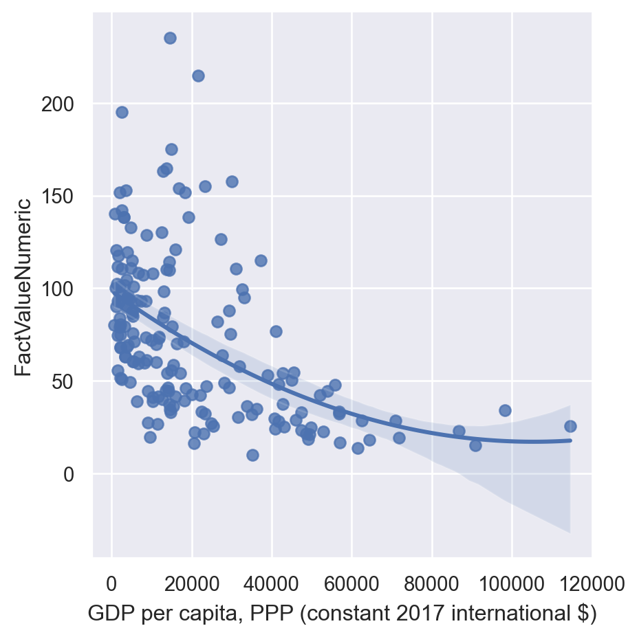
With a similar syntaxis, we can draw histogram and density plots, which can also be helpful to understand the distribution of continuous variables.
For instance, in the code below we are going to draw the histogram for GDP per capita for each parent location separately.
a = sns.displot(data = gdp_pollution,
x = "GDP per capita, PPP (constant 2017 international $)",
kind = 'hist',
col='ParentLocation')
a.set_axis_labels("GDP", "Count")
a.set_titles("{col_name}")
a.savefig('./export.png')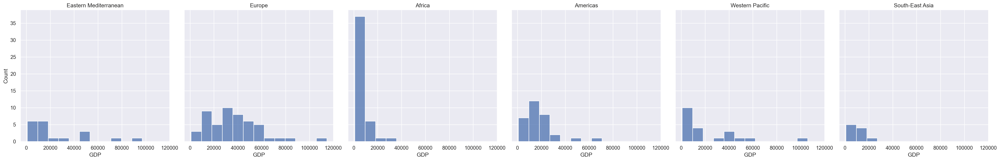
Similarly, we could have used:
f, ax = plt.subplots()
sns.histplot(data = gdp_pollution,
x = "GDP per capita, PPP (constant 2017 international $)",
color="skyblue",
label="MaxTemp", kde=True, ax = ax)
plt.legend()
plt.xlabel('GDP per capita')Text(0.5, 0, 'GDP per capita')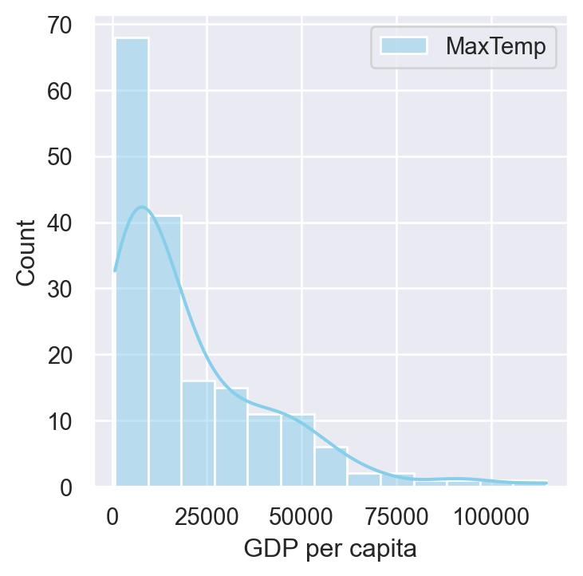
Heatmaps are also built-in within Seaborn and are a very popular too. to display the correlation between the variables of the dataframe. It’s like visualizing a correlation matrix with colors.
sns.heatmap(gdp_pollution[[ "GDP per capita, PPP (constant 2017 international $)",
"FactValueNumeric",
'Population (historical estimates)']].corr())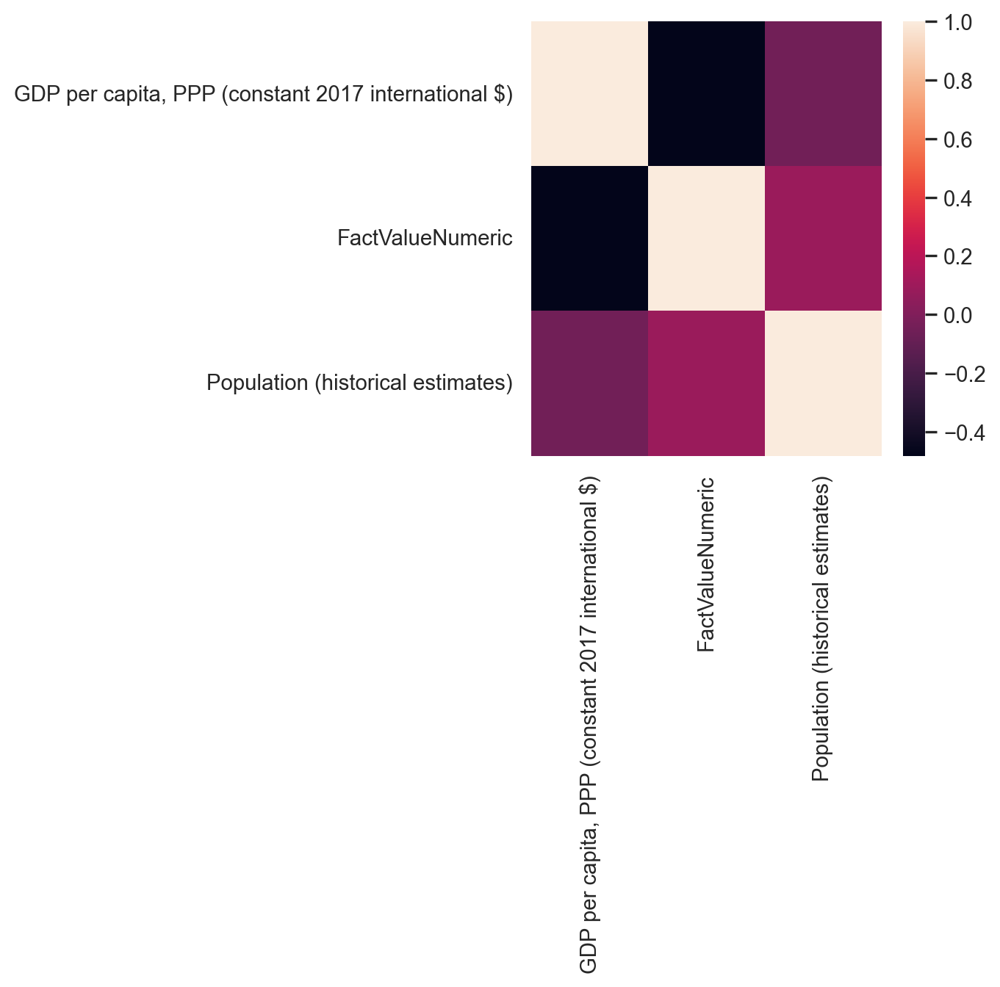
2.3 Practice exercises
Write a loop that describes all columns of the credit transaction data.
Show solution
for c in data.columns: print(c)Write a loop that plots in a different subplot the scatterplot of GDP vs mortality for each Parent Location. It should have 3 columns and 2 rows.
Show solution
#Defining a 2x2 grid of subplots fig, axs = plt.subplots(nrows=2,ncols=3,figsize=(16,10)) plt.subplots_adjust(wspace=0.5) #adjusting white space between individual plots # get list of parent locations parentl = gdp_pollution['ParentLocation'].unique() # create dictionary of colors for each country # Define six colors palette = sns.color_palette() # Use the palette to assign colors to parent locations colors = palette[:len(parentl)] # Create a dictionary mapping parent locations to colors parent_color_dict = dict(zip(parentl, colors)) # convert to an array with the shapes of the figure we want so that we can loop over them parentl_arr= np.array(parentl) parentl_arr= parentl_arr.reshape(2, 3) # looping over the 2x2 grid for i in range(2): for j in range(3): #extract the part of the data for that subset of countries aux = gdp_pollution[gdp_pollution['ParentLocation']==parentl_arr[i,j]] #Making the scatterplot aux.plot(ax=axs[i,j], x ='GDP per capita, PPP (constant 2017 international $)', y ='FactValueNumeric', kind='scatter', color=parent_color_dict[parentl_arr[i,j]]) # label axes axs[i,j].set_xlabel('GDP per capita') axs[i,j].set_ylabel('Pollution induced mortality') # set title of subplot axs[i,j].set_title(parentl_arr[i,j]) #Putting a dollar sign, and thousand-comma separator on x-axis labels axs[i,j].xaxis.set_major_formatter('${x:,.0f}') # increasing font size of axis labels axs[i,j].tick_params(axis = 'both',labelsize=6) parentl_arr[i,j]